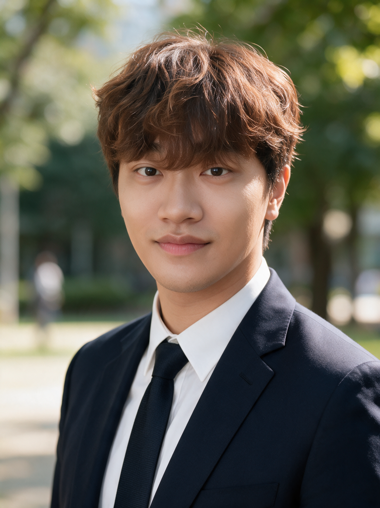

Research Scientist II · Koros Group · Georgia Institute of Technology
Welcome! I am a chemical engineer with research interests in membrane separation and the synthesis of functional polymers, porous materials, and polymer composites. My work spans materials and systems design, experimental synthesis and characterization, and industrial applications, with a focus on developing materials based solutions to diverse technological challenges.
My research aims to bridge fundamental materials science and practical engineering by translating new materials and separation concepts into scalable technologies for energy, environmental, and industrial applications.
I currently lead the development of a novel CO₂ driven sorp-vection membrane separation process for selective purification of silicone oils, funded by The Dow Chemical Company. I work in the Koros Group at Georgia Tech in collaboration with Ryan Lively.
Research Interests: Membrane Separation • Functional Polymers • Porous Materials • Polymer Composites • Transport Phenomena • Advanced Separations.
Experience
Education
Development of a CO₂-driven sorp-vection process for selective purification of silicone oils by removing cyclic siloxanes. This emerging technology couples liquid-phase sorption with convective carrier gas sweep through hollow fiber membranes, enabling efficient separation without thermal degradation of the silicone product. (Funded by The Dow Chemical Company)
Design and fabrication of high-pressure hollow fiber membrane modules, including parametric studies of PDMS selective layer thickness, fiber count, and module geometry. Ongoing work on diagnosing and resolving performance changes during scale-up.
Synthesis of nano-porous monolithic and spherical polyimide aerogels with tunable pore size and porosity. Applications span thermal insulation, electromagnetic interference shielding, lithium-ion battery separators, and low-dielectric-constant films for semiconductor packaging.
Pyrolysis protocols and precursor chemistry for CMS hollow fibers derived from polyimide precursors, targeting ultraselective H₂/CH₄ separation with scalable fabrication pathways.
12 publications as leading author · 12 as contributing author · Full list on Google Scholar. Bold = lead author. († equal contribution)
Leading Author Journal Articles
Contributing Author Journal Articles